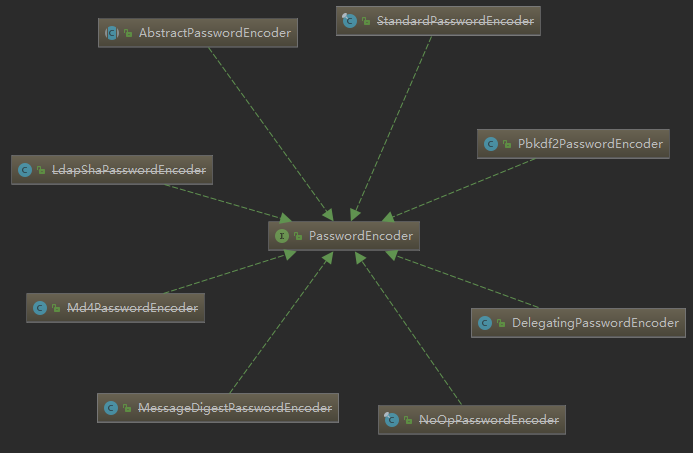

主要有两种选择Spring Security和Apache Shiro
Spring Security因为是利用了Spring IOC 和AOP的特性而无法脱离Spring独立存在。而Apache Shiro可以独立存在
概念
认证authentication：如通过账户密码知道你是谁
鉴权authorization：是通过认证后的用户所绑定的角色等凭证来证明你可以做什么
RBAC，基于角色的访问控制，Role-Based Access Control：权限赋予给角色，角色赋予给用户
运行
1 | <dependency> |
启动项目，命令行会打印一个默认用户user的随机密码
访问http://localhost:8080/actuator会跳转到一个登录页面http://localhost:8080/login
核心组件
UserDetailsService接口
负责从特定的地方加载用户信息
只有一个方法UserDetails loadUserByUsername(String var1)，通过用户名来加载用户，从系统数据中查询并加载具体的用户到Spring Security中
UserDetails接口
代表了详细的用户信息，最终交给Spring Security的是UserDetails。共规定了七个方法，分别为获取用户的权限集、加密后的密码、唯一的用户名，以及判断账户是否过期、是否锁定、凭证是否过期、用户是否可用。
User——UserDetails的实现类
org.springframework.security.core.userdetails.User是UserDetails的一个具体实现，可以存储更多的信息，并创建对象
UserDetailsManager接口
规定了五个方法，分别是创建、删除、更新用户、更改密码、查询用户是否存在
InMemoryUserDetailsManager——UserDetailsManager的实现类
实现接口，提供对象的创建方法
UserDetailsServiceAutoConfiguration自动配置类
注解的分析
1 |
|
@Conditinal类注解与配置注解（@Configuration或@Bean）配合使用，指示在符合条件下加载配置或注册bean
此处的条件为：
- 类路径下存在AuthenticationManager
- Bean容器中存在ObjectPostProcessor
- Bean容器中不存在AuthenticationManager, AuthenticationProvider, UserDetailsService
先不用管这些类是干什么的
配置类成员Bean的分析
1 | (......) |
初始化了一个名为InMemoryUserDetailsManager的内存用户管理器，该管理器通过配置注入了一个默认的UserDetails对象即user存在内存中，每次启动user都是动态生成的。
可以自己定义UserDetailsManager接口的实现类
1 | //原文是让一个Repostity对象存储Map并实现功能，然后让Manager对象调用Reposity的六个方法 |
将用户管理器注入Bean容器
1 |
|
使用数据库管理用户
用Mapper接口对象进行数据库处理，替代users进行Map操作
密码
md5不是一种加密算法，由于彩虹表的出现，已经变得容易破解
PasswordEncoder接口
1 | public interface PasswordEncoder { |
提供两个功能：密码编码，匹配验证
此接口在类库中有多个实现，其中已有多个被废弃
实现类DelegatingPasswordEncoder
委托密码编码器
注解
@Secured
注解方法，指定可以调用该方法的角色或权限，若不符合则拒绝访问，例如
1 | ("ROLE_ADMIN") |
@PreAuthorize / @PostAuthorize
@PreAuthorize适合进入方法之前验证授权。 @PreAuthorize可以兼顾，角色/登录用户权限，参数传递给方法等等。
@PostAuthorize虽然不经常使用，检查授权方法之后才被执行，所以它适合用在对返回的值作验证授权。
可以使用Spring表达式语言作为它们的条件，详见文档，或在spring-security-core的jar包的org\springframework\security\access\expression\SecurityExpressionRoot.class中能看到提供的方法